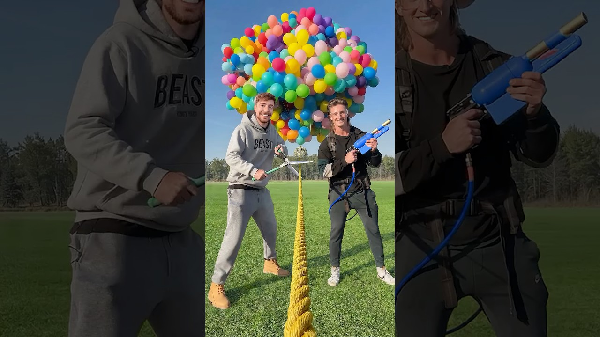
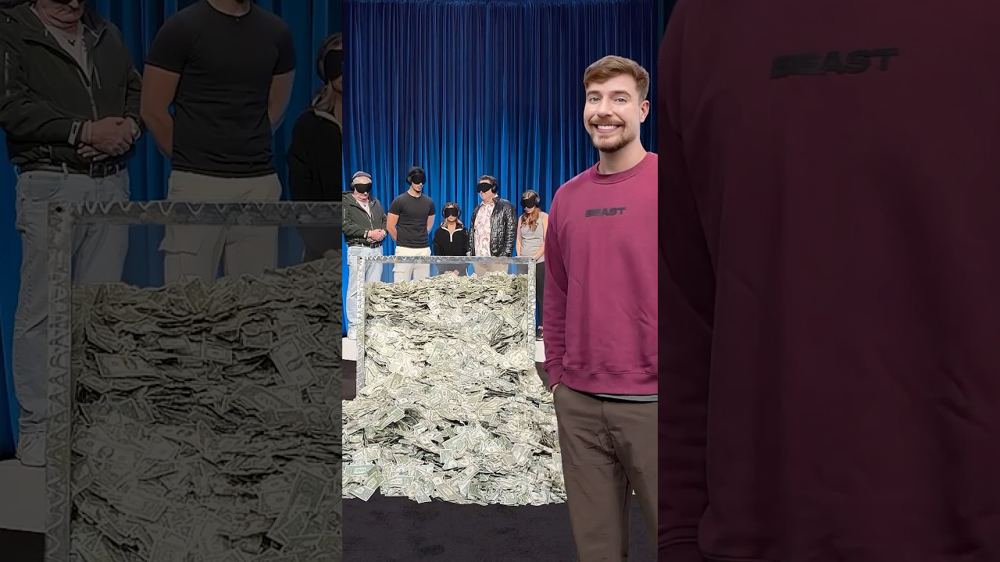
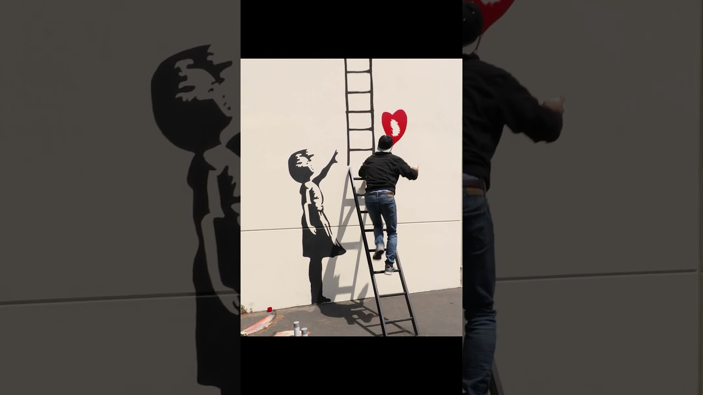
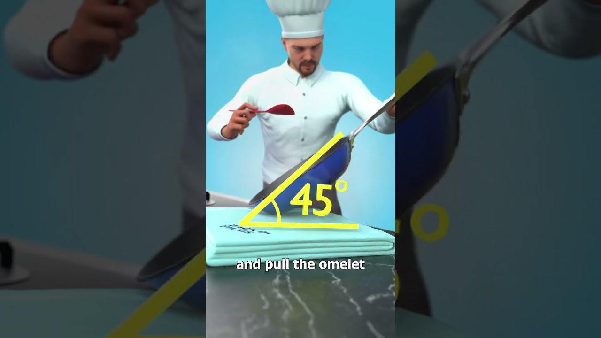
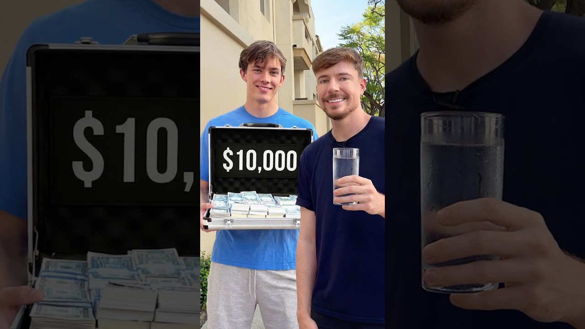
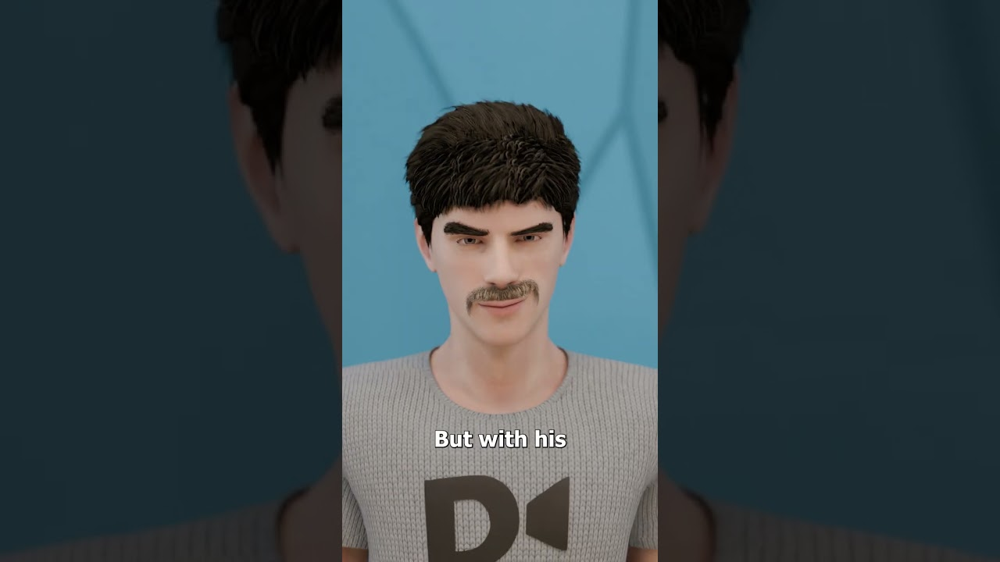
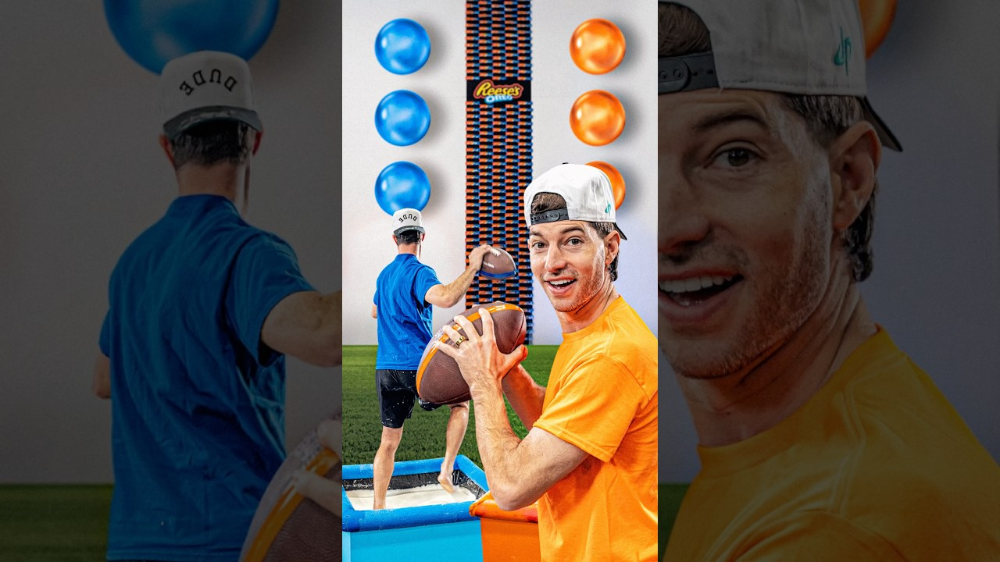
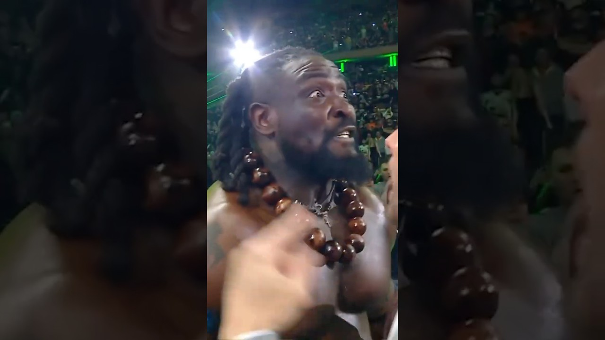
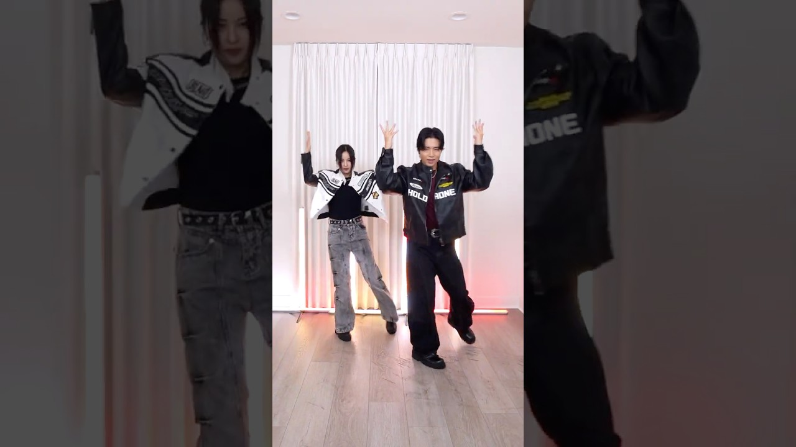

- 2025年11月院线公映，以 18.5 亿美元全球票房打破动画电影史上映纪录；2026年3月11日登陆 Disney+，引发新一轮讨论热潮。
- 延续 Judy Hopps 与 Nick Wilde 搭档破案，引入 Ke Huy Quan 等新声优，加入沙漠区等全新场景。
- IMDB 7.4/10，Z 世代与家庭观众双覆盖，社媒热度跨圈层持续扩散。
- 【搭档公式】 视觉反差搭档（小只×大只角色组合）= 天然钩子，RPG/放置类素材可套用"意想不到的 duo"框架。
- 【流媒体上线窗口】 用户刷完电影后处于娱乐欲高峰，3月中旬至4月是投放休闲/剧情手游的黄金窗口，文案用"The adventure continues"蹭续集情绪。
- 【制服+职业扮演审美】 动物警探造型契合美区玩家"穿搭+职业扮演"偏好，角色换装/职业解锁类素材点击率预期高。


- 2026 NCAA 男篮锦标赛创收视历史纪录；UConn 19 分大逆转淘汰杜克，Braylon Mullins 压哨球视频全网刷屏。
- 四强：密歇根大学 vs 亚利桑那、康涅狄格 vs 伊利诺伊，冠军赛 4 月 6 日在印第安纳波利斯举行。
- 全美约 24% 成年人参与 Bracket 竞猜，广告市场在此两周集中爆发。
- 【逆转叙事钩子】 "Down 19 → Still won" 结构在美国玩家中极具共鸣，竞技/策略类手游素材直接沿用绝地翻盘框架。
- 【Bracket 决策心理】 "选择→结果"决策循环与策略/卡牌游戏核心玩法同构，"Build your team / Make your pick"框架切入阵容搭配。
- 【倒计时压迫感】 4月6日冠军赛前1-2周，投放"赛程积分榜"样式素材，契合用户当下信息接收习惯。


- 4月10-12日及17-19日在加州印第奥举办，门票宣布后不到一周售罄。
- 三大压轴：Sabrina Carpenter（周五）、Justin Bieber 回归首演（周六）、Karol G（周日）；另有 BIGBANG、Young Thug 参演。
- 时尚与美妆是最大 UGC 驱动力，TikTok"Coachella Outfit"相关标签累计浏览超 10 亿次。
- 【Festival Look 换装钩子】 Coachella 是美区 Z 世代年度最高"换装自我表达"情绪峰值，换装/皮肤类手游素材用"Your Coachella fit, in-game"精准命中。
- 【情怀回归叙事】 Justin Bieber 回归、BIGBANG 参演引发跨圈层情感浓度，适合"角色/活动回归"类运营素材借势。
- 【KOL 内容密度蹭势】 节日期间达人内容密集爆发，素材中加入沙漠/霓虹/帐篷等视觉元素，即可通过视觉联想捕获节日情绪流量。


- HBO/Max《亢奋》第三季 4 月 12 日首播，距第二季时隔近四年，预告片 48 小时内播放突破 5000 万次。
- 本季"5 年时间跳跃"，角色从高中步入成年社会；新增 Natasha Lyonne、Sharon Stone、Rosalía 加盟。
- 高饱和霓虹美学与 Z 世代焦虑议题著称，Zendaya 造型和配乐每季都引发大规模二创内容爆发。
- 【霓虹美学借鉴】 深色背景+霓虹紫/金高光配色是标志性视觉语言，手游 UA 素材沿用这套打光风格，即可触发"亢奋氛围"联想，延长视觉驻留。
- 【成年焦虑叙事】 "New chapter starts now"文案框架精准命中正在追剧的 18-26 岁用户，适合剧情 RPG/互动小说品类。
- 【首播日抢量窗口】 每周播出日 ±2 天集中提高出价，使用青春/情感冲突题材素材，是高性价比的周期性追热点策略。


- xAI 推出 SuperGrok Lite 订阅档（月费 $10），提供 Grok 3.5 访问及基础图像/视频创作能力，定价引发大量"值不值"讨论。
- Grok Imagine 重大更新，新增风格化图像模板；同期收紧免费层权限，引发大规模用户抱怨。
- Elon Musk 预告"Grok 5 将史诗级"，发布时间已延误，科技媒体与用户持续高期待等待。
- 【AI 好奇心借势】 "AI 到底能做什么"好奇心搜索用户具有高科技接受度，益智/策略类素材用"AI-level strategy"钩子暗示游戏深度。
- 【付费分层心理共鸣】 SuperGrok Lite $10 引发"数字服务值不值"讨论高峰，"Free to start"框架此时降低内购转化门槛效果最显著。
- 【AI 失控焦虑流量】 Grok 生成不良内容争议引发"AI 边界"讨论，赛博朋克/末日主题手游可用"What if AI had no rules?"钩子精准捕获这批用户。


- 30 周年系列庆典延续至 3-4 月，限量卡牌包 eBay 转手价溢价 300%+，引爆收藏圈和社交媒体。
- TCG 宝可梦卡牌市场过去 12 个月流通量增长 140%，开盒视频大量涌现，TikTok #PokemonCards 单周曝光超 5 亿次。
- Nintendo Switch 2 发布前后新作传言持续发酵，玩家社区高度活跃，情怀话题跨全年龄层共鸣强烈。
- 【开盒/抽卡情绪极值】 开盒视频惊喜感与抽卡动画高度同构，手游抽卡/开宝箱素材在此周期"高光展示+夸张反应"击中情绪记忆点。
- 【收集完整度强迫症】 "Gotta catch 'em all"是 30 年传承的强迫收集钩子，图鉴完成度/角色解锁进度条类素材转化效率在此情绪背景下达峰值。
- 【情怀+新奇双引擎】 "你是从哪一代开始的"互动句式可唤起群体记忆，适合有资深玩家社区的手游引发评论互动，降低 CPE。


- 2026 MLB 开幕日（3月26日），大谷翔平以 MVP + 本垒打王身份出战，投打两用首场表现引发全美狂欢，社媒实时讨论量超超级碗前半场。
- 道奇队 $700M/10年合同仍是职业体育史上最大合同，球迷对每场比赛保持极高关注度。
- 大谷个人 TikTok 账号粉丝 3 月单月增长 120 万，在非棒球观众群体中也建立了广泛认知。
- 【双栖超人叙事】 "One player, two roles"框架展示角色多技能/多形态切换，传递全能感，适合有复杂职业系统的 RPG。
- 【赛季开幕仪式感】 开幕日带有强烈"新开始"情绪，与新服开启/版本更新逻辑高度契合，"Season starts now / Who's ready?"框架捕获开幕期兴奋情绪。
- 【跨圈层明星流量】 大谷在非棒球受众中也有高知名度，投放运动竞技类素材时，"全能超人"叙事可拓展非硬核体育玩家圈层。


- 杰西卡·辛普森宣布回归音乐圈，正值 Y2K 美学在 TikTok 强势复活周期，大量"当年的她 vs 现在"对比内容爆发。
- 其 2000 年代造型（超低腰牛仔裤、闪亮上衣）被 Z 世代重新演绎，#Y2KFashion TikTok 单周浏览超 8 亿次。
- 个人品牌宣布与多家零售商新一轮合作，商业和文化热度双线爆发。
- 【Y2K 时间差钩子】 "2005 you vs 2026 you"对比结构是 TikTok 高分留存公式，角色复古外观 vs 最新皮肤对比精准触发 25-35 岁用户怀旧情绪。
- 【闪亮+低饱和滤镜美学】 Y2K 视觉特征（玻璃质感、金属光泽、低饱和粉/银配色）与当前手游皮肤设计趋势高度契合，素材加入这套视觉滤镜可钩住目标受众。
- 【"She's back"回归情绪】 "复古回归"叙事框架引发用户集体情绪共振，手游"经典角色/活动回归"类运营素材套用这一公式制造稀缺感。


- Netflix 宣布《怪奇物语》衍生项目《Tales from the Upside Down》开发确认，同时公布第五季（终季）最终回播出时间窗口，引爆粉丝社群。
- 衍生宇宙扩展计划曝光：包括动画剧集、舞台剧全球巡演及游戏联名合作，Netflix 给予高优先级资源倾斜。
- 系列在 Netflix 全球播放量历史 Top 5，任何官宣动作都能触发跨平台社媒联动，3 月末话题热度持续两周以上。
- 【翻转现实视觉钩子】 颠倒世界的镜像扭曲概念是极强好奇心触发器，手游素材借用"翻转/扭曲现实"视觉特效作为前 3 秒钩子，诱发"这是什么？"的点击冲动。
- 【IP 宇宙延续感】 "The story doesn't end here"框架强化游戏世界观深度感，适合有丰富剧情积累的手游。
- 【复古80s霓虹美学】 与 Y2K 复古热叠加，双重情怀共振，素材使用这套视觉语言在当前 TikTok/Shorts 算法中完播率更高。


- Zendaya 以《亢奋》第三季 + 《沙丘3》双线同步话题在 3-4 月达到个人热度历史峰值，4 月颁奖季获多项表演奖提名。
- 与 Timothée Chalamet 确认恋情正式公开，#Zendaya 标签连续 5 天位居 X/TikTok 趋势榜首，单日产生超 1200 万条相关内容。
- 3 月封面同时出现在 Vogue US、Vanity Fair、Harper's Bazaar，全球 Google 时尚搜索量达峰值。
- 【多线叙事爆发策略】 多个频道同期投放互补角度素材制造"话题包围感"，可提升跨渠道 Recall，适合大版本更新期间的多端联动。
- 【CP 话题流量】 角色情侣/搭档关系向素材（选择你的队友/CP 配对玩法）在此情绪背景下精准触发收藏和分享。
- 【高质感视觉标准提升】 三刊同封提升用户视觉审美阈值，此周期游戏素材整体画质和构图精度应有意识地拔高，以匹配注意力门槛。
综合分 = 点赞 + 评论×3 + 收藏×2 + 分享×2 评论权重更高，因为它代表深度互动；收藏和分享体现主动留存与传播意愿，这也是为什么 collinskey 的 Brainrot 视频（分享 9.1M）从第 5 名跃升为第 1 名。#boneka #brainrot — Collins Key
- 分享量 9.1M，是点赞的近一半——Brainrot 内容传播裂变能力极强，适合病毒素材方向
- 把游戏怪物/BOSS "塞进" 真实生活场景（坐地铁、逛超市）制造反差魔性感
#ishowspeed
- 评论量 371K（全场最高），KOL 效应带来极强粉丝互动
- 游戏角色 cosplay + 达人夸张表演 = 低成本高辨识度素材公式；适合新英雄上线时的达人合作
Being a girl dad is an "unprecedented" experience
- "pov: 你是___" 是 TikTok 长青钩子结构，代入感极强，收藏量 559K 说明用户高度认同
- 游戏 UA 套用：「pov: 你是联盟里最后一个幸存者」/ 「pov: 你刚刚开到 SSR」
decorating my boyfriend's back with sparkles
- 极度细腻的亮片铺满画面，视觉上有强烈 ASMR 感，天然高完播率
- 「为另一半做某件事」情侣互动框架：游戏礼包/皮肤赠送场景 → "给 TA 一个惊喜"
That walk said everything @korraobidi #RedCarpetBoy
- 真实街头互动、自然笑声，接近素人感，信任度高，评论 88K 说明引发强烈讨论
- 「路人的真实反应」= 社交证明结构：达人在公共场所玩游戏 → 路人停下来围观，增加可信度
#gym #gymmotivation #beforeandafter
- 「Day 1 / Day X」进度标签是强钩子，激发好奇"接下来会怎样"，保留悬念驱动完播
- 套用到游戏：「Day 1 新手」→「Day 30 满级」对比素材，配合倒计时节奏剪辑
#Balinotmogis #TrendingReels #ViralTiktok
- AI 生成角色 + 魔性音乐 + 简单循环动作 = 极低成本病毒素材公式
- 用游戏角色做类似「swag walk」循环动画，配合热门 BGM，适合开屏/插屏广告
Granny wants to go diving — ocean epoxy flooring
- 「过程积累 + 最终成品震撼」结构：全程保持悬念，结尾爆发视觉冲击，天然留存
- 游戏素材：基地/城堡建造过程快进 → 最终盛况展示，「从零到史诗」的叙事节奏
#experiment #satisfying #asmr
- 标题即钩子：用一个具体问题驱动完播，每次工具切换都是小高潮，节奏清晰
- 游戏 UA 直接套用：「哪个英雄能 1v5？」/ 「这个装备能打穿最终 BOSS 吗？」
Kondisi terkini — 真实场景记录
- 「打开一扇门/进入一个空间」的揭秘结构天然吸引点击，低数据但算法偶发推流说明潜力存在
- 游戏 UA：「进入副本/地下城」第一视角探索开场，保留真实粗粒感而非精修画面增加代入感
| # | 账号 | 内容 | 点赞 | 评论 | 收藏 | 分享 | 综合分 |
|---|---|---|---|---|---|---|---|
| 1 | @collinskey | 轮胎脑袋 Brainrot | 19.2M 🏆 | 79.8K | 1.6M | 9.1M 🏆 | 40.8M |
| 2 | @ishowspeed | Deku Cosplay 展示 | 16.3M | 371.3K 🏆 | 1.2M | 1.5M | 22.8M |
| 3 | @fakeltfunny0021 | POV: 你是个奶爸 | 12M | 15.2K | 559.4K 🏆 | 1.5M | 16.2M |
| 4 | @bbranson8 | 男友背部贴闪钻 | 9.8M | 17.4K | 457.8K | 1.5M | 13.8M |
| 5 | @andr3w_wave | 好莱坞街拍互动 | 11.7M | 88K | 416.4K | 255.5K | 13.3M |
| 6 | @gymmmmm23 | 1 Day 健身挑战 | 6.6M | 77.9K | 370.7K | 1.2M | 10.0M |
| 7 | @ellon.keli | AI 嘻哈小猴子 | 3M | 27.4K | 238.9K | 900.7K | 5.4M |
| 8 | @restore.craft | 星形海洋地板 | 1.6M | 11.1K | 115.5K | 77.3K | 2.0M |
| 9 | @mamato.viral | 切穿5层黄瓜实验 | 1.7M | 6K | 70.4K | 44.6K | 1.95M |
| 10 | @theodoretroyce3 | 阁楼杂乱揭秘 | 398.6K | 13.9K | 43.7K | 38.2K | 0.6M |
📊 内容类型分布
🏆 各指标冠军
Brainrot = 最强裂变
@collinskey 分享量 9.1M，是点赞的 47%。荒诞反常识内容的传播冲动远高于其他类型，综合分高达 40.8M。
KOL 驱动深度互动
@ishowspeed 评论量 371K，是第二名的 4 倍。KOL 内容"引发讨论"的价值被综合分正确放大（评论×3）。
POV 情感 = 高收藏
@fakeltfunny0021 的奶爸 POV 收藏量 559K 全场最高。高收藏 = 用户认同感强且想反复看。
问题钩子 = 完播保障
"什么工具能切穿5层黄瓜？" 用具体问题开场，每次尝试都是小高潮。问题驱动 + 分段揭晓直接对抗划走行为。
进度叙事 = 情绪积累
「1 Day / Day X」时间轴让用户感知努力与成长。套用到游戏：「Day 1 → Day 30」成长对比素材。
AI 生成 = 低成本病毒
AI 魔性小猴子获 3M 点赞 + 900K 分享。AI 生成角色 + 魔性音乐 + 循环动作，制作成本极低。

- 【气球/随机格 = 抽卡钩子原型】 弹射气球选择奖项的机制与手游"转盘抽奖/宝箱爆率"视觉上高度同构，素材直接套用"射中哪个格子你就赢得它"的随机奖励框架，激发贪婪心理。
- 【极简规则驱动高完播】 机制一句话说清，每次弹射都是独立小悬念，节奏紧凑。手游素材可用同等节奏：展示3-5次连抽结果，每次都是小高潮，杜绝拖沓。
- 【大额数字开屏钩子】 "$10,000"标题即钩子，前0.5秒就锁住注意力。游戏素材可借鉴：首帧展示战利品/奖励金额（"价值10000钻石"），同样原理。

- 【人性博弈 = 策略游戏核心情绪】 "你会拿多少，还是分给别人？"的道德困境是策略/社交游戏的精髓所在。素材直接用"你会怎么选？"问题钩子切入，展示游戏内联盟/背刺机制，引发评论讨论。
- 【陌生人协作叙事】 5个陌生人快速建立信任又相互猜疑的叙事弧，适合多人在线游戏素材：展示队友从陌生到默契的情感变化，比单纯展示战斗画面更有情感驻留。
- 【评论率极高 = 话题性设计】 点赞140万但评论率高，说明内容触发了"我也想表态"的欲望。游戏素材可在结尾加"你会怎么选"投票选项，主动设计评论钩子，拉低 CPE。
- 【宝藏/副本锁定 = 游戏开箱前置钩子】 保险柜封存大奖的视觉与"副本入口/宝藏地图"高度同构，素材可用：展示封印中的稀有道具/皮肤，然后给玩家"解锁密码"，制造参与感和稀缺感。
- 【任务性内容留存】 "第一个找到密码的人赢得奖励"的挑战结构驱动观众反复观看寻找线索，直接对标游戏内的"隐藏成就/彩蛋"玩法，引发深度用户参与。
- 【品牌联名可见度模板】 与 Salesforce 的合作方式（嵌入品牌产品作为挑战机制）是极自然的原生植入，对手游而言：达人使用游戏内特定道具完成现实挑战，是低排斥感的联名素材公式。

- 【揭秘结构 = 最强完播钩子】 "揭露X的真相"是 YouTube/Shorts 完播率最高的叙事结构之一，观众必须看到最后。游戏素材可用：揭秘"传说英雄的真实背景故事"/"开发者从未说过的隐藏设定"。
- 【视觉无缝跳切 = 高分留存技术】 Zach King 的核心竞争力是让观众"看不穿剪辑点"，产生"这怎么做到的？"的留存驱动。游戏素材可借鉴：角色技能的无缝转换特效，或第一视角突然切换到全局地图，制造视觉惊喜驻留。
- 【热点话题寄生策略】 Banksy 是长期热点IP，Zach King 用自己的格式"寄生"在这个话题上放大传播力。游戏营销可用同样思路：用热门文化话题（Coachella、Euphoria等）作为视频钩子，再过渡到游戏内容。

- 【制作过程展示 = 满足感驱动留存】 从原材料到成品的完整制作过程，每一步都有视觉回报，与游戏"建造/升级/合成"动画高度同构。素材公式：展示资源→制作中→成品瞬间，结尾给足"满足一击"。
- 【零解说依靠画面自述】 无旁白，全靠视觉和音效讲故事，在无声滑动 Shorts 流中仍然强力留存。游戏素材可学习：无需旁白，只靠绚丽技能特效+ASMR音效+满血回复动画，前3秒钩住用户。
- 【异文化审美全球扩散】 日本料理对美区观众有天然的"异文化惊喜感"，与游戏中的"东方幻想/武侠/奇幻设定"具有同等跨文化吸引力，是出海游戏素材的有效借鉴方向。

- 【极简任务=大奖励 反差钩子】 "做一件超简单的事就能得到超大回报"是强烈反差钩子，手游素材可借鉴：登录即送稀有皮肤/新手任务完成即送SSR，文案强调"就这么简单？"的惊喜感。
- 【路人真实反应 = 社交证明】 真实的路人惊喜表情比精心设计的演员反应更有说服力。游戏素材中加入素人玩家的真实首次体验反应，信任度和转化率均高于纯演示素材。
- 【反常识叙事驱动传播】 "端杯水=$10,000"的荒诞设定让人忍不住分享给朋友"你信吗？"，制造病毒传播的社交货币。游戏素材也可用"做到这件事送你XXX"的荒诞对比来引发分享。

- 【游戏话题天然受众命中】 GTA 6 是游戏圈长期热搜词，用游戏相关真实事件做内容钩子，能以极低 CPM 命中核心游戏用户群体，同等投入覆盖质量远超泛娱乐素材。
- 【"你绝对不敢相信"叙事模板】 真实案例 + 意外反转（少年被抓）+ 快节奏60秒讲完是 Zack D. Films 爆款公式。游戏素材可套用：讲述游戏史上真实的意外事件/隐藏彩蛋发现过程，同等完播结构。
- 【安全感反差焦虑】 泄露事件触发"任何东西都不安全"的现代科技焦虑，与赛博朋克/黑客/反乌托邦主题手游的核心情绪完美契合，素材可直接用"你的数据，你的命运"等焦虑化钩子。

- 【熟悉规则+陌生环境 = 反差笑点】 已知规则（足球）+ 意外场景（流沙）产生强烈反差喜感，是制作笑点的高效公式。游戏素材：让已知英雄在完全意外的副本/环境中完成任务，反差制造幽默记忆点。
- 【身体障碍 = 强共情完播】 看别人在困难环境中挣扎是天然高完播内容（"接下来会怎样？"）。手游卡关/挑战副本的失败画面 + 胜利反转结构，复用同款情绪驱动力。
- 【体育+游戏人群高度重叠】 NFL/足球观众与手游核心用户在美区人口中高度重叠（尤其男性18-34岁），体育题材素材在这批用户中天然高CTR，适合竞技/MOBA/体育类游戏定向投放。

- 【Boss 式登场 = 最强角色展示公式】 推开所有阻碍、不可阻挡地登场，是格斗/动作类游戏角色展示素材的最佳范本。新英雄/新角色上线素材直接借用"无人能挡"的力量叙事，激发购买冲动。
- 【赛前预热节奏迁移】 WWE 用每周 Shorts 高光片段持续为 WrestleMania 积累用户期待，这套"大事件预热内容矩阵"策略，可直接用于游戏大版本/新赛季前的预热素材排期。
- 【力量反差冲击 = 高CTR缩略图公式】 一个巨汉推开多人的封面画面天然高CTR，画面构图清晰传达"力量对比"信息，游戏素材缩略图可借鉴：主角 vs 压倒性数量敌人，1v多的力量反差构图。

- 【粉丝经济搭便车策略】 在 IP 爆发期发布高质量同人/翻跳内容，精准截获涌入平台的粉丝流量，几乎零冷启动成本。游戏营销同理：在大型IP联动上线当天同步发布"向联名IP致敬"类内容，蹭 IP 热度定向截流。
- 【情侣双人舞 = 情感代入高效率】 男女搭档 + 流畅协调的编舞，天然有"羡慕感"和"想分享给对象"的社交货币价值。手游情侣副本/双人任务的素材，可采用同款情侣协作视觉语言。
- 【音乐游戏/节奏类品类天然流量池】 舞蹈翻跳内容的受众与音游、节奏类手游用户高度重合，在此类内容流行周期内定向投放，CPM 和 CTR 均优于均值。
| # | 频道 | 标题 | 播放量 | 点赞 | 发布日期 | 内容类型 |
|---|---|---|---|---|---|---|
| 1 | @MrBeast | Pop Balloons Win $10,000 | 6760万 🏆 | 122.9万 | 03-17 | 奖金挑战 |
| 2 | @MrBeast | 5 Strangers Split $100,000 | 4560万 | 140.2万 🏆 | 03-13 | 社会实验 |
| 3 | @MrBeast | I Hid $1,000,000 In This Vault | 2820万 | 124.3万 | 03-20 | 悬念挑战 |
| 4 | @ZachKing | Banksy Identity Revealed | 2510万 | 15.2万 | 03-22 | 视觉魔术 |
| 5 | @ZackDFilms | How Japanese Omelet Rice Is Made | 1100万 | 约32万 | 03-29 | 视觉满足感 |
| 6 | @MrBeast | Bring Me Water = Win $10,000 | 737万 | 28.1万 | 03-26 | 街头挑战 |
| 7 | @ZackDFilms | The Teen Who Leaked GTA 6 | 620万 | 约18万 | 03-30 | 真实犯罪 |
| 8 | @DudePerfect | Quicksand Football Battle | 230万 | 约6.8万 | 03-23 | 荒诞运动 |
| 9 | @WWE | Oba Femi 突破安保登场 | 123万 | 约3万 | 03-30 | 体育高光 |
| 10 | @EllenAndBrian | BTS '2.0' Dance Cover | 88万 | 约3.7万 | 03-28 | 舞蹈翻跳 |
MrBeast 公式垄断顶端
前4名播放量合计超 1.76亿，MrBeast 独占前3。"大额奖金+极简机制+路人真实反应"是 Shorts 最稳定的流量公式，手游素材可学习此结构。
视觉魔术&冷知识强势
Zach King 和 Zack D. Films 合计贡献 3230万 播放，靠"你绝不会想到的结尾"完播钩子，是非大额资金创作者的最高效竞争路径。
完播 > 点赞
Zach King（2510万播放，仅15万点赞）说明 Shorts 算法更看重完播信号而非点赞率。游戏素材应优化前3秒钩子和结尾反转，而不是优化CTA按钮设计。
游戏话题天然加成
GTA 6 泄露故事（620万播放）证明游戏相关话题在 YouTube Shorts 有天然的精准受众池，游戏类素材在同平台的有效曝光成本显著低于泛娱乐内容。
Shorts 黄金时长 45-60秒
10个视频平均时长52秒，YouTube Shorts 最长60秒，最优时长是 45-58秒——够讲一个完整故事，又不拖慢节奏。游戏素材控制在此区间内。
IP 借势搭便车策略
BTS《2.0》回归期间，粉丝翻跳视频无需冷启动即可截获大量搜索流量。游戏 IP 联动期同步发布相关内容，是零成本流量放大器。